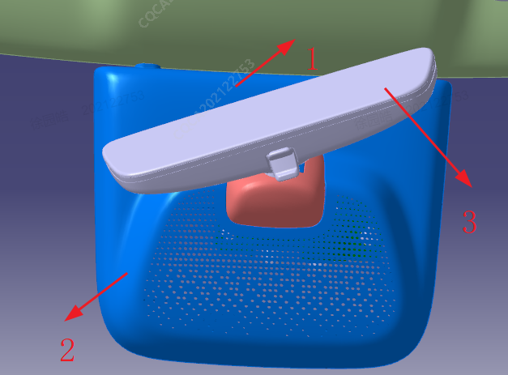
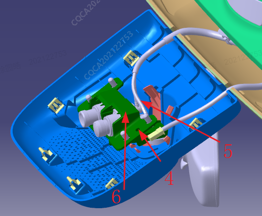

1. Декоративная накладка ветрового стекла в сборе (правая);
2. Декоративная накладка ветрового стекла в сборе (левая);
3. Узел зеркала заднего вида в салоне;
4. Винт с внутренним шестигранником;
5. Жгут проводов;
6. Узел кронштейна камеры высокой четкости в салоне.
| Инструмент | Отвертка с внутренним шестигранником, крестовая отвертка |
| Момент затяжки | 5±1N，3.5±0.5N |
1. Снять декоративную накладку ветрового стекла
2. С помощью крестовой отвертки снять кронштейн камеры
3. Отсоединить жгут проводов камеры
4. Снять камеру
Установку выполнять в порядке, обратном снятию. После снятия и установки камеры необходимо в соответствии с инструкциями по сервисной калибровке выбрать подходящий сценарий и заново выполнить калибровку, войдя в инженерный режим EDC через сервисный диагностический прибор